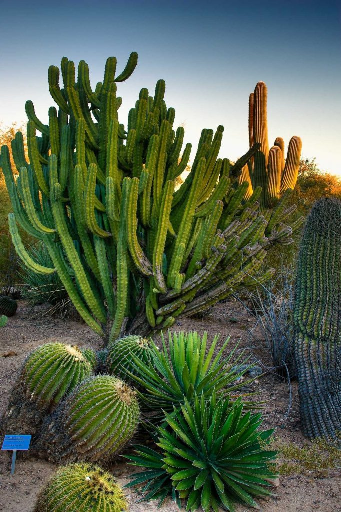

The Arizona Upland subdivision of the Sonoran Desert (of which Phoenix is a part) has the most structurally diverse flora in the United States. One of the most well-known types of succulents, the giant saguaro cactus, is found throughout the city and its neighboring environs. Other native species are the organ pipe, barrel, fishhook, senita, prickly pear and cholla cacti, ocotillo, Palo Verde trees and foothill and blue palo verde, California fan palm, agaves, soaptree yucca, Spanish bayonet, desert spoon, and red yucca, ironwood, mesquite, and the creosote bush. Many non-native plants also thrive in Phoenix including, but not limited to, the date palm, Mexican fan palm, pineapple palm, Afghan pine, Canary Island pine, Mexican fencepost cactus, cardon cactus, acacia, eucalyptus, aloe, bougainvillea, oleander, lantana, bottlebrush, olive, citrus, and red bird of paradise.
Go to Yahoo
